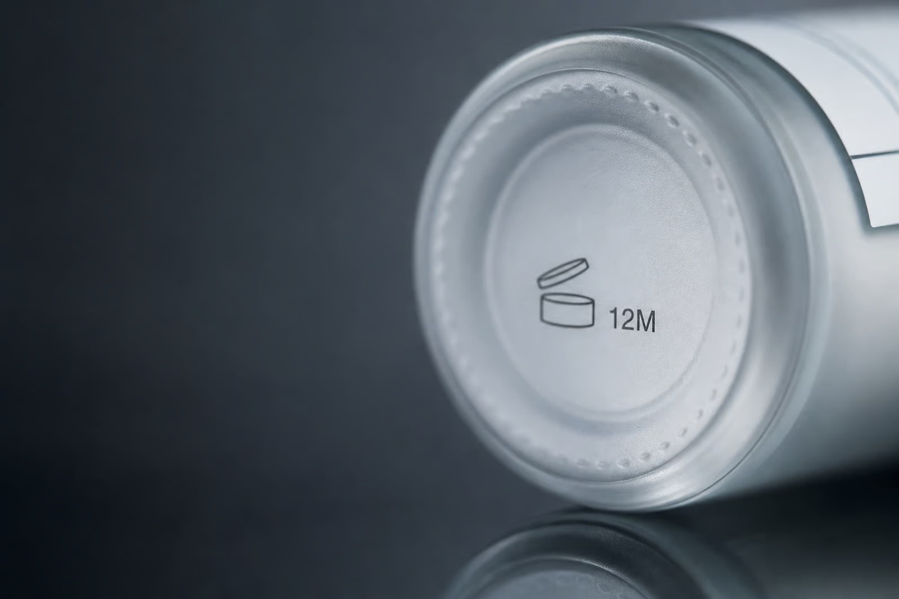
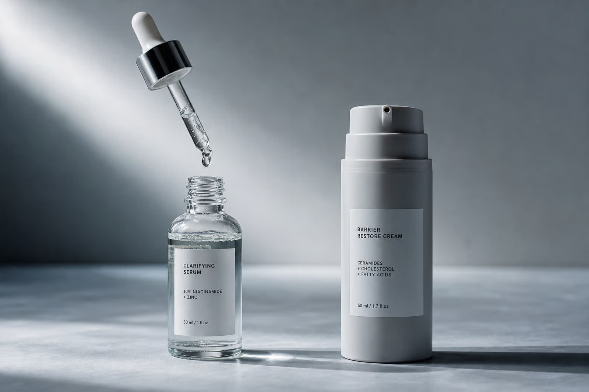

Go find the most expensive thing on your bathroom shelf. The vitamin C serum, the retinol, the eye cream you rationed because it cost more than a dinner out. Turn it over and look for an expiration date. On most of them, you will not find one. What you will find is a small drawing of an open jar with a number and the letter M next to it. 6M. 12M. 24M. That symbol is doing a lot of quiet work, and the fact that so few people can read it is not an accident of design.
What the Little Open Jar Actually Means
The symbol is called the PAO, short for Period After Opening. The number tells you how many months the product is considered good for after you first break the seal. A 12M means twelve months from the day you opened it, not twelve months from the day you buy it, and certainly not twelve months from today. The clock starts when you do.

That distinction matters more than it sounds. A product can sit in a warehouse, then a store, then your cabinet for a year or two before you ever open it, and the PAO says nothing about any of that time. It only starts counting once the lid comes off. Which means the number is quietly generous to the brand and quietly useless to you, because almost nobody writes down the day they opened a jar of moisturizer.
Why There Is No Real Expiration Date
In the United States, cosmetics are not required to carry an expiration date at all. The rule that governs them does not mandate one, and outside of a few categories the industry has been left to police itself. So most brands simply do not print a hard date, because a hard date is a promise a customer can hold you to, and a Period After Opening symbol is a suggestion the customer has to enforce on themselves.
The PAO itself comes out of European labeling rules, where products meant to last more than thirty months can show the open jar symbol instead of a date. It has spread worldwide because it is convenient. It looks like disclosure. It is disclosure, technically. But it puts the entire burden of tracking time onto the person least equipped to track it, which is you, standing at the sink, with no memory of when you bought this.
Dead Does Not Mean Spoiled
Here is the part the industry is happy to let you misunderstand. When people hear expired, they picture something gone rancid or moldy, something obviously wrong. That is not usually what happens to a beauty product. A cream does not have to smell bad to have stopped working. The more common failure is silent. The active ingredient you paid for degraded into something inert, and the product looks and smells exactly the same while doing nothing at all.
Vitamin C is the clearest example. Pure L-ascorbic acid, the form in most of those bright serums, is notoriously unstable. It reacts with light and air, and as it oxidizes it turns from clear or pale to yellow, then orange, then brown. By the time it is deep amber, much of the vitamin C has converted to a compound that does little for your skin. The serum has not spoiled in any way that would alarm you. It has simply died, on schedule, and you were probably still using it.
Retinol degrades in light and air too. Many peptides are fragile. Sunscreen is the one where this genuinely matters for safety rather than just value, because a degraded sunscreen can leave you believing you are protected when the filters have broken down. With sunscreen, the printed expiration date is real and you should respect it.
The Packaging Is a Tell

Once you know actives die from light and air, the shape of the bottle starts telling on the brand. A serum sold in a clear glass dropper bottle is a serum being slowly ruined every time you open it, because a dropper pulls a fresh slug of air into the bottle with every use and clear glass lets light at the contents all day. It looks beautiful on a shelf. It is close to the worst possible container for an unstable active.
Compare that to opaque, airless pump packaging, the kind where you never see the product and air never gets in. That is a brand spending money to actually protect what it sold you. It is less photogenic and more expensive to produce, which is exactly why the most Instagrammable serums so often come in the packaging least suited to keeping them alive. When a brand chooses the pretty jar over the functional one, it is telling you what it optimized for.
The open jar with a hand dipping into it is the other quiet offender. Every dip introduces air, warmth, and whatever is on your fingers. A pump or a spatula is not a luxury detail. It is the difference between a product that lasts its stated life and one that turns weeks early.
How to Read Your Own Shelf Tonight
You do not need an app or a chart. Start by finding the PAO on the things you spent real money on, and be honest with yourself about when you opened them. If you cannot remember, that is your answer, and going forward the fix is embarrassingly low tech:
- Write the open date on the bottom of the bottle in marker. That single habit does more than any product claim on the front.
- Use your eyes and nose — a white or clear product that has turned yellow, a lotion that has separated and will not remix, a texture that went grainy or watery, a smell that shifted even slightly off.
- For anything with vitamin C or retinol, color change is the loudest signal you will get, and it is usually telling you the money is already gone.
- Respect the printed date on sunscreen — that one is about protection, not just potency.
Any of those changes means the formula has changed, and a changed formula is not the one you were sold. None of this requires trusting a brand. It requires reading the one symbol they were hoping you would keep ignoring, and remembering that the clock has been running the whole time.